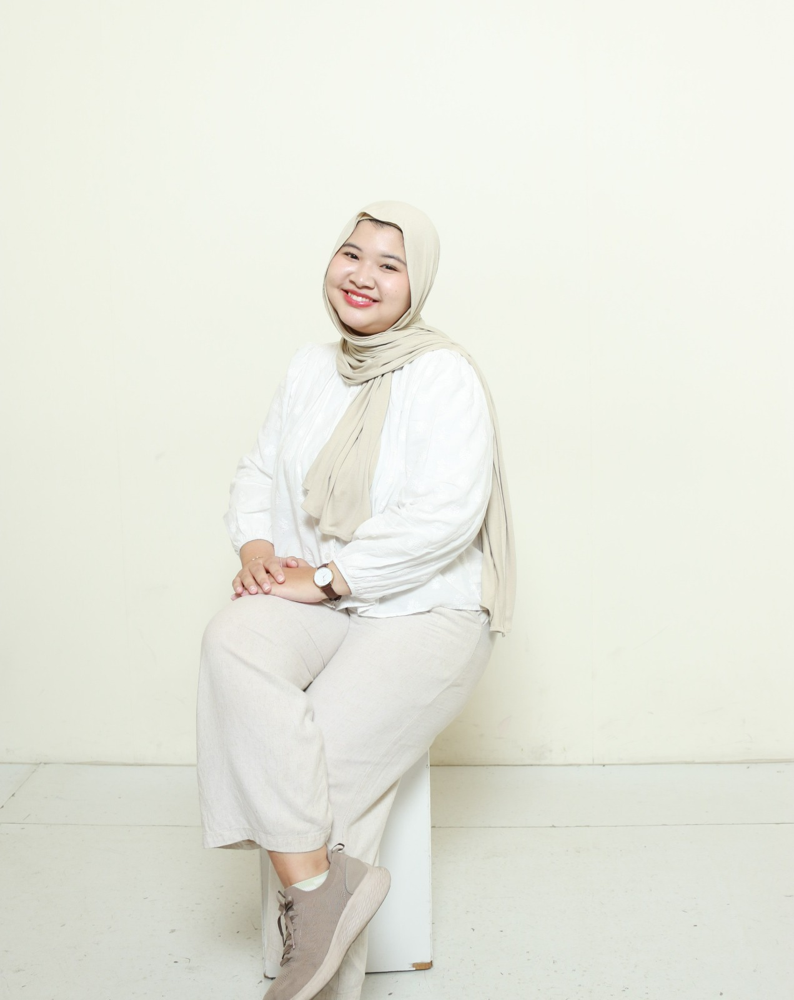

Fresh Graduate in Industrial & Organizational Psychology from Universitas Diponegoro, passionate about recruitment, talent development, and HR operations.

Saya adalah lulusan Sarjana Psikologi dari Universitas Diponegoro (GPA 3.47) dengan peminatan Psikologi Industri dan Organisasi (PIO). Memiliki ketertarikan mendalam pada strategi pengelolaan sumber daya manusia, proses rekrutmen, serta pengembangan talenta.
Melalui pengalaman magang HR Operations di perusahaan FMCG/Distribution serta peran kepemimpinan sebagai Wakil Ketua Divisi Bendahara BEM, saya berpengalaman dalam melakukan CV screening, administrasi alat tes psikologi, koordinasi interview, public speaking, hingga pengelolaan anggaran operasional program.
S1 Psikologi, Universitas Diponegoro (IPK: 3.47)
Human Resources, Talent Acquisition & Operations
Jejak pengalaman profesional, kepemimpinan organisasi, dan kepanitiaan acara.
PT Unggul Adi Jaya (Getstok)
BEM Fakultas Psikologi Undip
BEM Fakultas Psikologi Undip
Go Go UKMF 2024, Psikologi Undip
Memandu seluruh alur acara formal dan interaktif, serta berkoordinasi lintas divisi untuk memastikan kelancaran eksekusi acara.
OLIMDIPO 2024
Mengelola kebutuhan konsumsi untuk tamu VIP, panitia, dan peserta. Melakukan negosiasi vendor makanan & pengawasan distribusi harian.
Beauty Class 2023, UKMF Independance
Merancang rundown dan konsep kegiatan workshop, serta berkolaborasi dengan tim lintas divisi untuk menyukseskan target peserta.
Kombinasi kemampuan teknis & pemahaman perilaku untuk mendukung efektivitas HR.
Terbuka untuk kesempatan karir full-time atau kolaborasi di bidang HR & Talent Acquisition.
Tangerang, Indonesia